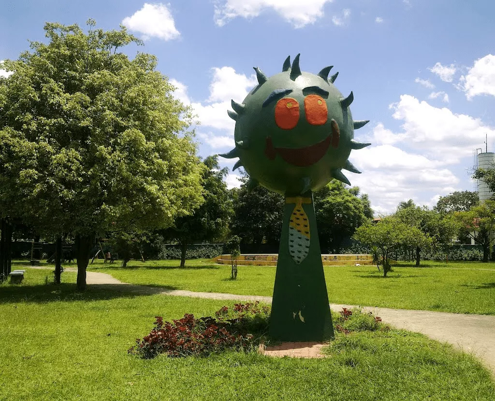
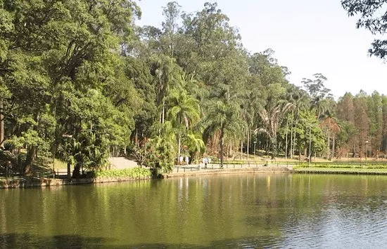
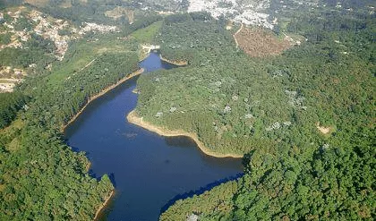

Guarulhos foi fundada em 8 de dezembro de 1560 pelo Padre Jesuíta Manuel de Paiva, com o nome de Nossa Senhora da Conceição, em um local até então habitado pelos índios Guarus, da tribo dos Guaianases.Em 1590 foram descobertas minas de ouro, na região onde atualmente é o bairro de Lavras. As chamadas 'Lavras Velhas do Geraldo' podem ser vistas, hoje, na margem direita da estrada que se dirige de Cumbica para Nazaré.
D. Pedro II visitou a região em 1880, a qual foi elevada à Província de Nossa Senhora da Conceição de Guarulhos. Apenas em 1906 uma Lei Estadual determinou que Guarulhos recebesse a denominação de cidade.No Brasil Colônia, durante os séculos XVII e XVIII, foram delimitadas sesmarias organizando a ocupação da região. Os sesmeiros se dedicaram à agricultura e à mineração e, como atividade de apoio, criavam gado vacum e cavalar. Entre os anos seiscentos e o início do século XX, houve produção de álcool e aguardente, embora o clima úmido e frio fosse propício a causar ferrugem ao trigo, mosaico a cana e curuquerê ao algodão.
O trabalho escravo foi realizado principalmente por negros de origem sudanesa, denominados Gegês, e foi utilizado em larga escala. Segundo o tombamento das propriedades rurais da Capitania de São Paulo de 1817, registraram-se 183 escravos na Freguesia da Conceição dos Guarulhos, pertencentes a 28 lavradores das seguintes áreas: Bom Jesus, Bom Sucesso, Guavirotuba, Itaverava, Lavras, Pirucaia, São Gonçalo, São Miguel (Pimentas) e Varados.Em 1915 Guarulhos recebe o Ramal Guapyra - Guarulhos, da estrada de ferro da Cantareira, possibilitando o escoamento de madeira, pedra e tijolos, fabricados em diversas olarias da região e amplamente utilizados na construção civil na capital. A cidade ganhou cinco estações: Vila Galvão, Torres Tibagy, Gopoúva, Vila Augusta e Guarulhos, além do prolongamento até a Base Aérea.
O início do século XX marcou também a chegada da energia elétrica (Light & Power), dos pedidos para instalação da rede telefônica, licenças para implantação de indústrias de atividades comerciais e dos serviços de transporte de passageiros.Na década de 40 foi inaugurada a Biblioteca Pública Municipal, o primeiro Centro de Saúde da cidade e a Santa Casa de Misericórdia, além de indústrias do setor elétrico, metalúrgico, plástico, alimentício, de borracha, calçados, peças para automóveis, relógios e couros. Em 1945 a Base Aérea de São Paulo (BASP) foi transferida do Campo de Marte, em São Paulo, para o bairro de Cumbica, em Guarulhos. Nos anos 50 a inauguração das rodovias Presidente Dutra e Fernão Dias aproxima pessoas e mercadorias da cidade. Guarulhos se viu unida a São Paulo, no momento histórico de aceleração industrial, e ao Rio de Janeiro, ainda então Capital Federal e centro de decisões políticas e econômicas, gerando, portanto, um impulso para instalação de indústrias nos trechos das rodovias que passam pelo município.
Fonte: https://cidades.ibge.gov.br/brasil/sp/guarulhos/historico
Guarulhos possui diversos pontos turísticos, locais de visitação turística com relevância cultural e/ou natural, com a possibilidade de contemplação, lugares incríveis para você visitar é o que não falta! Para te ajudar separamos 3 que você precisa conhecer.
A Praça dos Mamonas é um patrimônio criado pela prefeitura no ano de 1996 após a morte dos integrantes da banda Mamonas Assassinas. Todos os anos são realizadas homenagens na praça por meio dos shows organizados por fãs da banda que se iniciou na cidade.É um dos pontos turísticos de Guarulhos mais visitados devido ao seu peso da memória coletiva do grupo que fez sucesso no Brasil e no mundo na década de 1990.
USe você busca um lindo cenário para fotografar, vá ao Horto Florestal. Esta área verde é um dos mais belos pontos turísticos de Guarulhos, sem contar da sua importância para a manutenção da biodiversidade da região. Por isso, não é somente um espaço turístico para lazer, mas também para pesquisa científica e educação ambiental.
Agradável e ótimo para se exercitar ao ar livre, o Horto Florestal de Guarulhos é um verdadeiro refúgio dos paulistanos e uma boa pedida para levar crianças e fazer um passeio tranquilo, ou seja, é um lugar que deve entrar na sua lista de o que fazer em Guarulhos.
Com uma floresta de mais de 7.000 hectares de Mata Atlântica e com acesso fácil pela estrada do Cabuçu, este é um dos pontos turísticos de Guarulhos para aqueles que gostam de uma boa aventura. Inaugurado em 1962, o parque é responsável pela segurança de diversas espécies ameaçadas de extinção como bugio, jaguatirica, jacuguaçu, macuco, entre outras típicas da região.
Com 1h30 de trilha até chegar na cachoeira, a caminhada vale a pena para um refúgio tranquilo e sereno. A trilha é bem sinalizada e a paisagem é incrível. É realmente um passeio imperdível, e você pode levar crianças e fazer um piquenique agradável em meio a área verde, pois o local se mantém estruturado e seguro.
Fonte: https://blog.arboimoveis.com.br/pontos-turisticos-guarulhos/
Gustavo Henric Costa, conhecido como Guti (Guarulhos, 30 de dezembro de 1984), é um político e empresário brasileiro, filiado ao Partido Social Democrático (PSD). Atualmente, exerce o cargo de prefeito da cidade de Guarulhos.
Formado em Direito pela FAAP e pós-graduado em Direito Administrativo pela PUC, Guti foi vereador por dois mandatos e eleito prefeito de Guarulhos em 2016, sendo o político mais jovem a assumir a administração da cidade. Em 2008, quando ingressou na política, foi eleito o vereador mais jovem da Cidade Guarulhos com 2478 votos. Em 2016, aos 31 anos, Guti foi eleito Prefeito da cidade de Guarulhos com 481.541 votos.